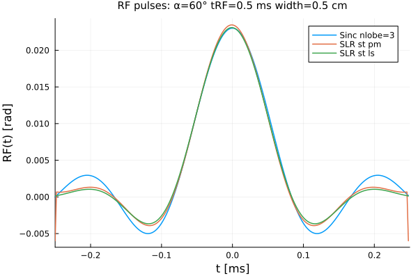
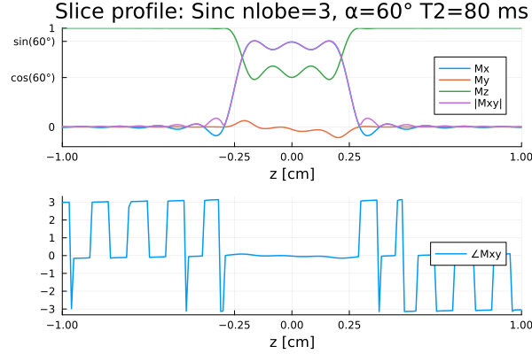
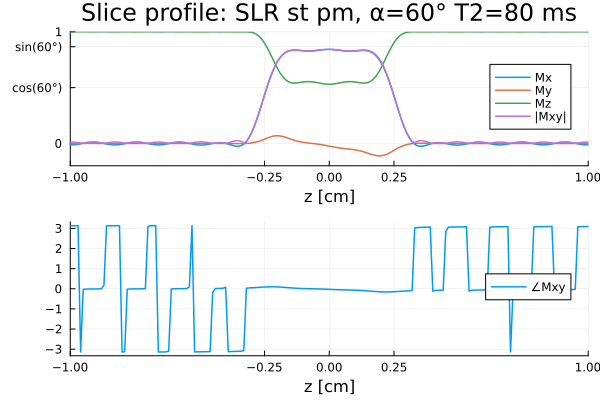
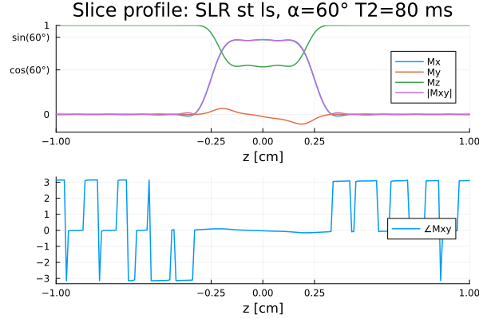
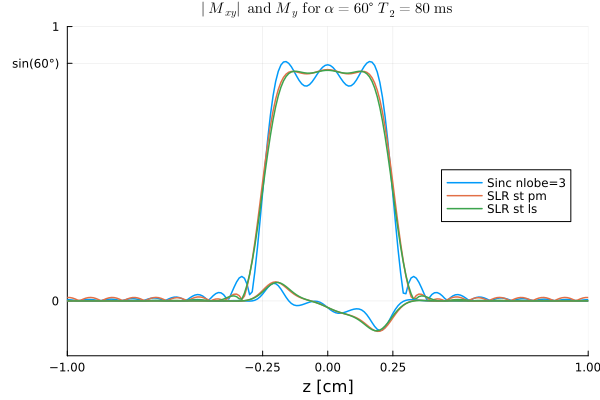
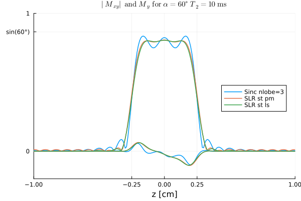

Shinnar-Le Roux Pulses
This page illustrates Shinnar-Le Roux (SLR) pulse design for MRI using the Julia package MRIPulses.
The SigPy documentation may be helpful.
This page comes from a single Julia file: slr.jl.
You can access the source code for such Julia documentation using the 'Edit on GitHub' link in the top right. You can view the corresponding notebook in nbviewer here: slr.ipynb, or open it in binder here: slr.ipynb.
Setup
First we add the Julia packages that are need for this demo. Change false to true in the following code block if you are using any of the following packages for the first time.
if false
import Pkg
Pkg.add([
"BlochSim"
"InteractiveUtils"
"LaTeXStrings"
"LinearAlgebra"
"MIRTjim"
"MRIPulses"
"Plots"
])
endTell this Julia session to use the following packages for this example. Run Pkg.add() in the preceding code block first, if needed.
using BlochSim: rf_slice, Spin, Position, signal, RF, b1_gauss, rf_slice
using BlochSim: excite!, spoil!
using LaTeXStrings
using MRIPulses: dzrf
using MIRTjim: jim, prompt
using Plots: default, plot, plot!
default(titlefontsize = 10, markerstrokecolor = :auto, label="", width = 1.5)The following line is helpful when running this file as a script; this way it will prompt user to hit a key after each figure is displayed.
isinteractive() ? jim(:prompt, true) : prompt(:draw);Baseline sinc pulse
tRF_ms = 0.5
n = 2^8 # how many samples
Δt_ms = tRF_ms / n # 3.90625 μs
nlobe = 3
α_deg = 60 # flip angle ° (somewhat large for testing)
α_rad = deg2rad(α_deg)
slice_width = 0.5 # cm
rf0, rephasing0 = rf_slice(tRF_ms ; nlobe, α_rad, Δt_ms, slice_width)
pulse0 = real(@. rf0.α * cis(rf0.θ)) # / b1_gauss(1, rf0.Δt)
label0 = "Sinc nlobe=$nlobe";SLR pulse(s)
tb = 2nlobe # time-bandwidth
d1, d2 = 0.01, 0.01 # δ₁, δ₂ ripple design parameters
ptype = :st; factor = 2sin(α_rad/2) # todo empirical factor for :st case
ftype1 = :pm
ftype2 = :ls
cancel_alpha_phs = false
pulse1 = dzrf(; n, tb, ptype, ftype=ftype1, d1, d2, cancel_alpha_phs)
@assert pulse1 ≈ real(pulse1)
pulse1 = factor * real(pulse1)
label1 = "SLR $ptype $ftype1"
pulse2 = dzrf(; n, tb, ptype, ftype=ftype2, d1, d2, cancel_alpha_phs)
@assert pulse2 ≈ real(pulse2)
pulse2 = factor * real(pulse2)
label2 = "SLR $ptype $ftype2" ;Plot pulses
t = ((0:(n-1)) / n .- 0.5) * tRF_ms # [-tRF_ms/2, tRF_ms/2)
prf = plot(t, [pulse0 pulse1 pulse2],
label = [label0 label1 label2],
xaxis = ("t [ms]", (-1,1) .* (tRF_ms/2), ),
yaxis = ("RF(t) [rad]", ),
title = "RF pulses: α=$(α_deg)° tRF=$tRF_ms ms width=$slice_width cm",
)
prompt()RF waveforms
For now, use the rephasing gradient from rf0. The rephasing gradient amplitude could be adjusted to better flatten the phase.
wave1 = pulse1 * b1_gauss(1, Δt_ms) # convert to Gauss for RF()
wave2 = pulse2 * b1_gauss(1, Δt_ms)
rf1 = RF(wave1, Δt_ms, 0, rf0.grad)
rf2 = RF(wave2, Δt_ms, 0, rf0.grad);Array of spins
For a range of z-positions to examine slice profile
Mz0, T1_ms, T2_ms, Δf_Hz = 1, 400, 80, 9 # tissue parameters
zpos = range(-1, 1, 201) # z positions (cm)
zfov = only(diff([extrema(zpos)...])) # 2 cm
make_spins(Mz0, T1_ms, T2_ms, Δf_Hz) = map(zpos) do z
pos = Position(0, 0, z)
Spin(Mz0, T1_ms, T2_ms, Δf_Hz, pos)
end;Excite and rephase the spins.
function exciter(rf;
T2_ms::Real = T2_ms,
spins = make_spins(Mz0, T1_ms, T2_ms, Δf_Hz),
rephasing = rephasing0,
)
map(spins) do spin
excite!(spin, rf)
spoil!(spin, rephasing)
end;
signal_out = signal.(spins)
return spins, signal_out
end
spins0, signal0 = exciter(rf0)
spins1, signal1 = exciter(rf1)
spins2, signal2 = exciter(rf2);Plot slice profiles
function plot_profile(spins, plabel)
mx = map(spin -> spin.M.x, spins)
my = map(spin -> spin.M.y, spins)
mz = map(spin -> spin.M.z, spins)
mmag = @. sqrt(mx^2 + my^2)
mpha = @. atan(my, mx)
xaxis = ("z [cm]", (-1,1), [-1, -slice_width/2, 0, slice_width/2, 1])
ytick = ([0, cos(α_rad), sin(α_rad), 1],
["0", "cos($(α_deg)°)", "sin($(α_deg)°)", 1])
pmag = plot(; xaxis, yaxis = ("", (-0.2,1), ytick), legend = :right)
plot!(zpos, mx, label = "Mx")
plot!(zpos, my, label = "My")
plot!(zpos, mz, label = "Mz")
plot!(zpos, mmag, label = "|Mxy|")
ppha = plot(; xaxis, legend = :right)
plot!(zpos, mpha, label = "∠Mxy")
return plot(pmag, ppha; layout = (2,1),
plot_title = "Slice profile: $plabel, α=$(α_deg)° T2=$T2_ms ms",
)
end;
pp0 = plot_profile(spins0, label0)
prompt()
pp1 = plot_profile(spins1, label1)
prompt()
pp2 = plot_profile(spins2, label2)
prompt()Compare slice profiles
function plot_profile2(signals, labels)
xaxis = ("z [cm]", (-1,1), [-1, -slice_width/2, 0, slice_width/2, 1])
ytick = ([0, sin(α_rad), 1], ["0", "sin($(α_deg)°)", 1])
plot(; title =
latexstring("|M_{xy}| \\ \\mathrm{and} \\ M_y \\ \\mathrm{ for } \\ α=$(α_deg)° \\ T_2=$T2_ms \\ \\mathrm{ms}"),
xaxis, yaxis = ("", (-0.2,1), ytick), legend = :right)
plot!(zpos, abs.(signals); label=labels)
plot!(zpos, imag.(signals); color=(1:3)')
end
signals = [signal0 signal1 signal2]
labels = [label0 label1 label2]
pmag1 = plot_profile2(signals, labels)
prompt()Short T2 case
Here the profile is even farther from the target, even for a 0.5 ms RF pulse.
Seems like the "apparent" M₀ could be quite different for short T2 and long T2 spins, which could bias $f_{\mathrm{f}}$ in some types of scans.
T2_ms = 10
spins0, signal0 = exciter(rf0; T2_ms)
spins1, signal1 = exciter(rf1; T2_ms)
spins2, signal2 = exciter(rf2; T2_ms)
pmag2 = plot_profile2([signal0 signal1 signal2], labels)
prompt()This page was generated using Literate.jl.